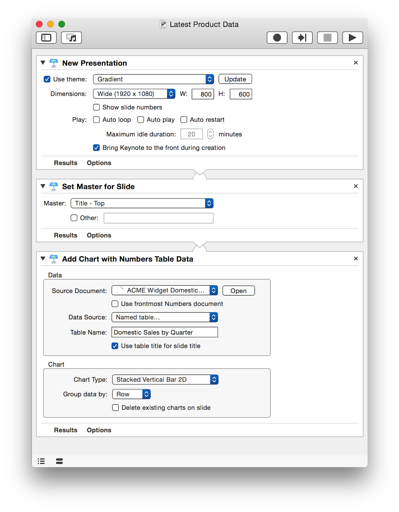

Automator actions for Keynote provide reliable tools for rapid development and deployment of high-quality professional presentations. For enterprise developers and in-house solution experts, these flexible and customizable Automator actions are the essential component for delivering time-critical marketing, research, and sales materials.
The materials on these pages are designed to introduce you to Keynote Automator action collection. Many of the pages contain example workflows and downloads to best acquaint you with how the actions can work together to solve problems and accomplish tasks.
So begin your exploration of Keynote automation by downloading and running the action installer by clicking its link in the box in the right side column. Enjoy!
IMPORTANT: Although some of the actions from this collection will work with Keynote 6.2, they are designed to be used with Keynote 6.5(+) running on OS X Yosemite (v10.10).
(⬇ see below ) An Automator workflow that creates a new presentation whose first slide displays a chart representing the data from a specified table contained in a Numbers document:
